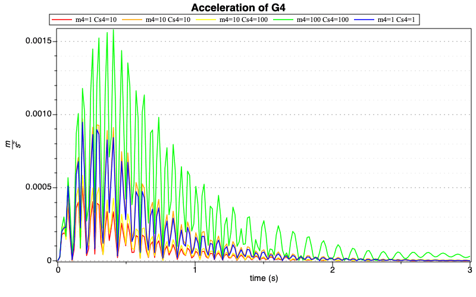
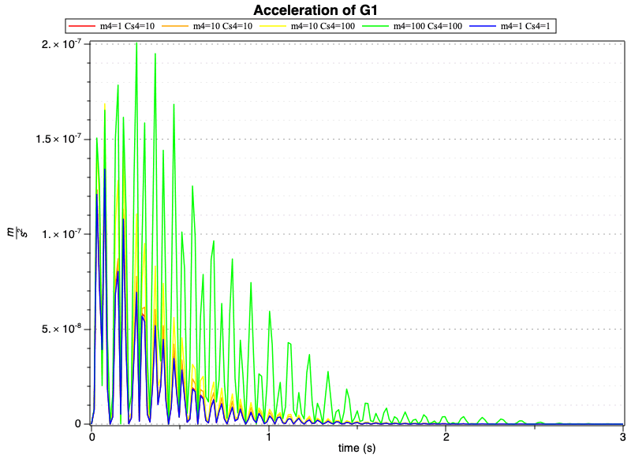
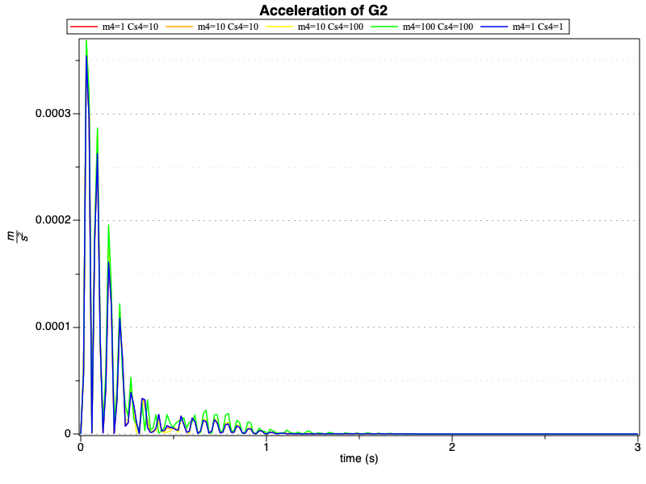
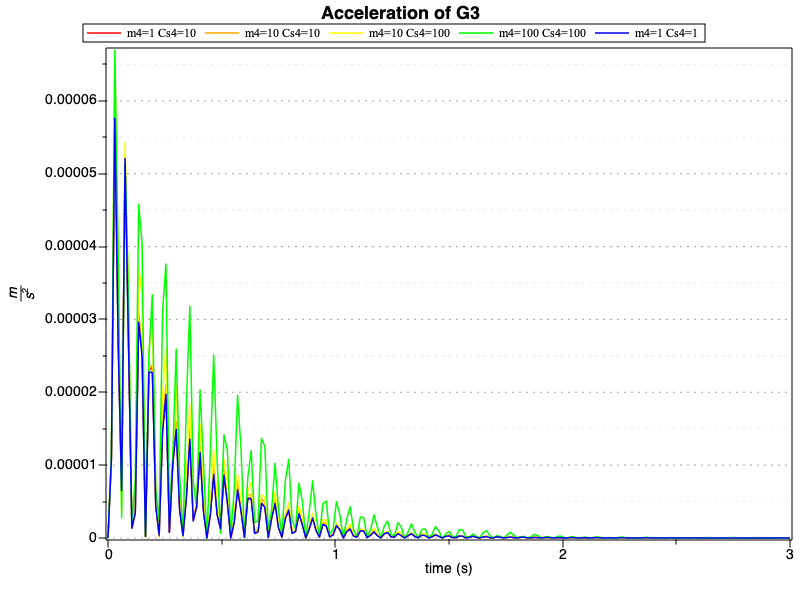
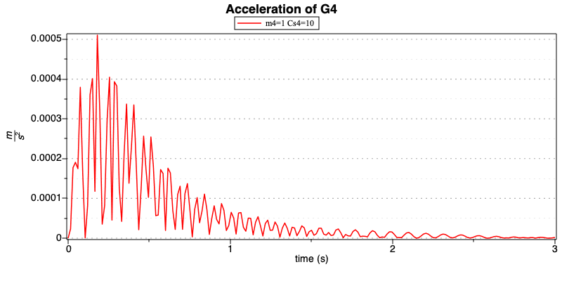
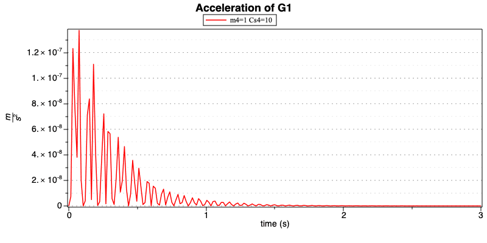
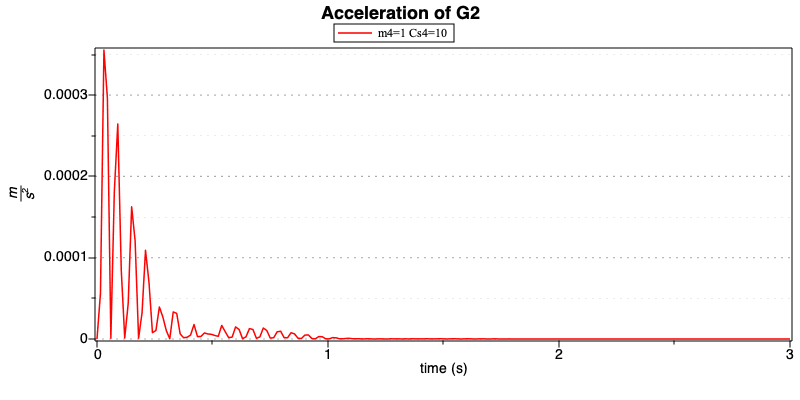
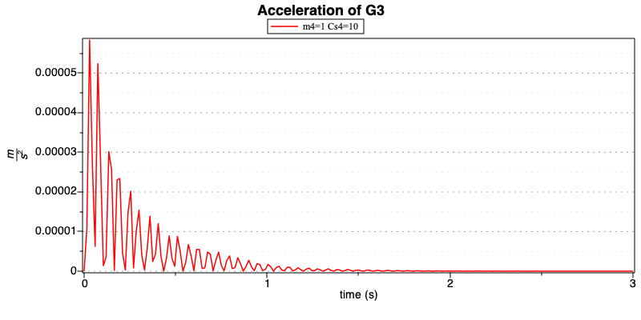

Result comparison
This section aims at finding the best values of mass and damping by evaluating the plot in the different scenario
| > | TF:=3: |
Plot the modulus of the acceleration of mass G4 in the 5 different scenarios
| > | display(odeplot(sol_dae__opt,subs(data,[t,sqrt(diff(G4[1],t,t)^2+diff(G4[2],t,t)^2)]),t=0..TF,
labels = ["time (s)", m/s^2],title = "Acceleration of G4"), odeplot(sol_dae__opt2,subs(data,[t,sqrt(diff(G4[1],t,t)^2+diff(G4[2],t,t)^2)]),t=0..TF, labels = ["time (s)", m/s^2]), odeplot(sol_dae__opt3,subs(data,[t,sqrt(diff(G4[1],t,t)^2+diff(G4[2],t,t)^2)]),t=0..TF, labels = ["time (s)", m/s^2],title = "Acceleration of G4"), odeplot(sol_dae__opt4,subs(data,[t,sqrt(diff(G4[1],t,t)^2+diff(G4[2],t,t)^2)]),t=0..TF, labels = ["time (s)", m/s^2]), odeplot(sol_dae__opt5,subs(data,[t,sqrt(diff(G4[1],t,t)^2+diff(G4[2],t,t)^2)]),t=0..TF, labels = ["time (s)", m/s^2]), color=["Red","Orange","Yellow","green","Blue"],legend=["m4=1 Cs4=10 ","m4=10 Cs4=10 ","m4=10 Cs4=100 ","m4=100 Cs4=100 ","m4=1 Cs4=1 "],size=[800,500]); |
|  |
From the previous plot it appears clearly that the configuration with m4=100 and Cs4=100 is the most unstable one.
Also the blue one (m4=1 and Cs4=1) and the orange one (m4=10 and Cs4=10) appear not be optimal.
The red configuration and the yellow configuration look the most stable ones.
Plot the modulus of the acceleration of mass G1 in the 5 different scenarios
| > | display(odeplot(sol_dae__opt,subs(data,[t,sqrt(diff(G1[1],t,t)^2+diff(G1[2],t,t)^2)]),t=0..TF,
labels = ["time (s)", m/s^2]), odeplot(sol_dae__opt2,subs(data,[t,sqrt(diff(G1[1],t,t)^2+diff(G1[2],t,t)^2)]),t=0..TF, labels = ["time (s)", m/s^2]), odeplot(sol_dae__opt3,subs(data,[t,sqrt(diff(G1[1],t,t)^2+diff(G1[2],t,t)^2)]),t=0..TF, labels = ["time (s)", m/s^2]), odeplot( sol_dae__opt4,subs(data,[t,sqrt(diff(G1[1],t,t)^2+diff(G1[2],t,t)^2)]),t=0..TF, labels = ["time (s)", m/s^2]), odeplot(sol_dae__opt5,subs(data,[t,sqrt(diff(G1[1],t,t)^2+diff(G1[2],t,t)^2)]),t=0..TF, labels = ["time (s)", m/s^2],title = "Acceleration of G1"), color=["Red","Orange","Yellow","green","Blue"],legend=["m4=1 Cs4=10 ","m4=10 Cs4=10 ","m4=10 Cs4=100 ","m4=100 Cs4=100 ","m4=1 Cs4=1 "],labels = ["time (s)", m/s^2],size=[800,600]); |
|  |
From the previous plot the red configuration (m4=1 and Cs4=10) looks the most stable ones.
Plot the modulus of the acceleration of mass G2 in the 5 different scenarios
| > | display(odeplot(sol_dae__opt,subs(data,[t,sqrt(diff(G2[1],t,t)^2+diff(G2[2],t,t)^2)]),t=0..TF,
labels = ["time (s)", m/s^2]), odeplot(sol_dae__opt2,subs(data,[t,sqrt(diff(G2[1],t,t)^2+diff(G2[2],t,t)^2)]),t=0..TF, labels = ["time (s)", m/s^2]), odeplot(sol_dae__opt3,subs(data,[t,sqrt(diff(G2[1],t,t)^2+diff(G2[2],t,t)^2)]),t=0..TF, labels = ["time (s)", m/s^2]), odeplot( sol_dae__opt4,subs(data,[t,sqrt(diff(G2[1],t,t)^2+diff(G2[2],t,t)^2)]),t=0..TF, labels = ["time (s)", m/s^2]), odeplot(sol_dae__opt5,subs(data,[t,sqrt(diff(G2[1],t,t)^2+diff(G2[2],t,t)^2)]),t=0..TF, labels = ["time (s)", m/s^2],title = "Acceleration of G2"), color=["Red","Orange","Yellow","green","Blue"],legend=["m4=1 Cs4=10 ","m4=10 Cs4=10 ","m4=10 Cs4=100 ","m4=100 Cs4=100 ","m4=1 Cs4=1 "],labels = ["time (s)", m/s^2],size=[800,600]); |
|  |
From the previous plot the red configuration (m4=1 and Cs4=10) looks the most stable ones.
Plot the modulus of the acceleration of mass G3 in the 5 different scenarios
| > | display(odeplot(sol_dae__opt,subs(data,[t,sqrt(diff(G3[1],t,t)^2+diff(G3[2],t,t)^2)]),t=0..TF,
labels = ["time (s)", m/s^2]), odeplot(sol_dae__opt2,subs(data,[t,sqrt(diff(G3[1],t,t)^2+diff(G3[2],t,t)^2)]),t=0..TF, labels = ["time (s)", m/s^2]), odeplot(sol_dae__opt3,subs(data,[t,sqrt(diff(G3[1],t,t)^2+diff(G3[2],t,t)^2)]),t=0..TF, labels = ["time (s)", m/s^2]), odeplot( sol_dae__opt4,subs(data,[t,sqrt(diff(G3[1],t,t)^2+diff(G3[2],t,t)^2)]),t=0..TF, labels = ["time (s)", m/s^2]), odeplot(sol_dae__opt5,subs(data,[t,sqrt(diff(G3[1],t,t)^2+diff(G3[2],t,t)^2)]),t=0..TF, labels = ["time (s)", m/s^2],title = "Acceleration of G3"), color=["Red","Orange","Yellow","green","Blue"],legend=["m4=1 Cs4=10 ","m4=10 Cs4=10 ","m4=10 Cs4=100 ","m4=100 Cs4=100 ","m4=1 Cs4=1 "],labels = ["time (s)", m/s^2],size=[800,600]); |
|  |
Optimized Configuration with m4=1 and Cs4=10
| > | display(odeplot(sol_dae__opt,subs(data,[t,sqrt(diff(G4[1],t,t)^2+diff(G4[2],t,t)^2)]),t=0..TF,
labels = ["time (s)", m/s^2]),title = "Acceleration of G4", color="Red",legend="m4=1 Cs4=10 ",labels = ["time (s)", m/s^2],size=[800,400]); |
|  |
| > | display(odeplot(sol_dae__opt,subs(data,[t,sqrt(diff(G1[1],t,t)^2+diff(G1[2],t,t)^2)]),t=0..TF,
labels = ["time (s)", m/s^2]),title = "Acceleration of G1", color="Red",legend="m4=1 Cs4=10 ",labels = ["time (s)", m/s^2],size=[800,400]); |
|  |
| > | display(odeplot(sol_dae__opt,subs(data,[t,sqrt(diff(G2[1],t,t)^2+diff(G2[2],t,t)^2)]),t=0..TF,
labels = ["time (s)", m/s^2]),title = "Acceleration of G2", color="Red",legend="m4=1 Cs4=10 ",labels = ["time (s)", m/s^2],size=[800,400]); |
|  |
| > | display(odeplot(sol_dae__opt,subs(data,[t,sqrt(diff(G3[1],t,t)^2+diff(G3[2],t,t)^2)]),t=0..TF,
labels = ["time (s)", m/s^2]),title = "Acceleration of G3", color="Red",legend="m4=1 Cs4=10 ",labels = ["time (s)", m/s^2],size=[800,400]); |
|  |